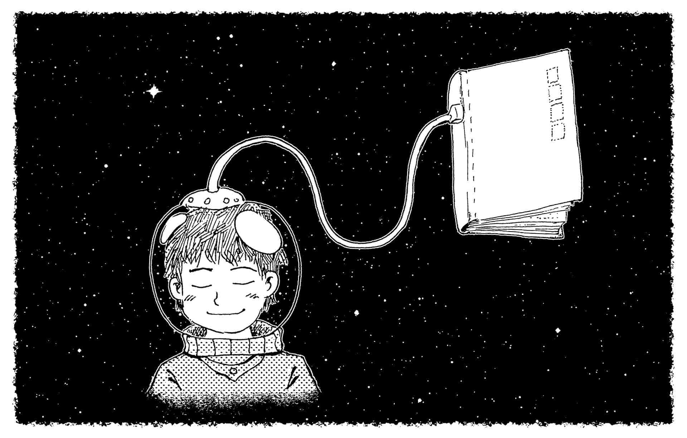

Hi There, Reader!
This website and the stories we publish here were created by me and my friend Xavier. We are a pair friends who share a passion for reading and decided to combine forces to publish some of my work. He created the website, I write the stories, he edits my writing (my spelling and grammar are hideous), and we profit (stonks). Well there isn’t much to say about myself. I was born in Colombia but have spent most of my life living in Panama. I moved around a lot during my early childhood which included one year in the U.S - that’s where I first learned english, and picked up some of my current main hobbies - reading, writing, watching anime, reading manga, drawing, and napping.
I also have a bunch of secondary hobbies (more like hyperfixations) that I do occasionally, such as crocheting, embroidery, and impulsively playing hard sheet music on the piano, in spite of my small ass hands being in my way. I used to consider myself an introverted person, but I have been informed otherwise - I guess I just don't know when to stop talking. I’m both artistically inclined and a lover of science, so I decided to study medicine while also finding outlets for my creativity, such as this website and the stories we publish here.

Since I was a little kid, I have always hzad a very vivid imagination and would create stories in my head while playing with my toys, entertaining myself for hours. The first book I ever attempted to write was when I was 11, and was a bad mixup between The Chronicles of Narnia, Disney’s Frozen, and Avatar: The Last AirBender. My mind is always conjuring up new stories, constantly creating new characters, plots, and even complex multiversal story lines. I want to share these stories with the world - for people to laugh, cry and suffer along with my characters.
I’ve had many sources of inspiration over the years. Some of the most important books I can mention would be the “Percy Jackson and the Olympians” and “The Heroes of Olympus” series by Rick Riordan, The Chronicles of Narnia, and Superpowered. Some of my favorite movie inspirations were “Pirates of the Caribbean”, “Man of Steel” and “Gladiator”. I’m an Anime lover, and series such as “Attack on titan”, “Tokyo ghoul” and “My hero academy” have had a huge influence on my story writing and character art. Last but not least are comics - I began reading them when I was 11 and oddly enough they were what fully launched me on a path of creativity and writing. Btw, check all of them out if you haven't already!
I just want people to enjoy my stories on this website, until I can publish them officially. This is where I will publish my work chapter by chapter. Wrapping up, I hope you enjoy my stories. I try my best, but I know that what I write is not for everybody. I hope that there are a few people who will find my work and like, enjoy it, and share it with others!